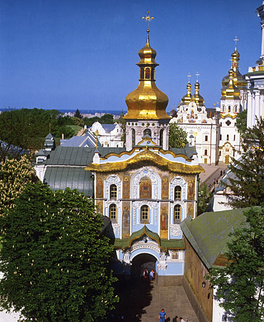

1051
Заснування
Традиційною датою заснування Києво-Печерського монастиря вважають 1051 рік за часів князя Ярослава Мудрого.
1051–2026
Відкрийте для себе величну красу, духовну спадщину та тисячолітню історію головної святині України.
Почати подорожКиєво-Печерська лавра — один із найвідоміших історико-культурних комплексів України. Її історія починається в XI столітті, коли ченці Антоній і Феодосій заснували печерний монастир.
Сьогодні це не лише місце паломництва, а й унікальний музейний комплекс, де зберігаються безцінні пам'ятки мистецтва та архітектури.

1051
Традиційною датою заснування Києво-Печерського монастиря вважають 1051 рік за часів князя Ярослава Мудрого.

XVIII ст.
Архітектурний ансамбль набув своїх неповторних рис українського бароко, збудовано Велику лаврську дзвіницю.

2000
Відбудова та освячення головного храму Лаври — Успенського собору, який був зруйнований під час Другої світової війни.
років історії у 2026 році
метрів становить загальна протяжність печер
рік внесення до Списку ЮНЕСКО